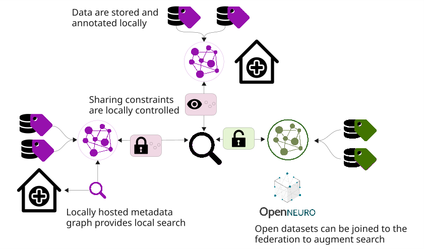
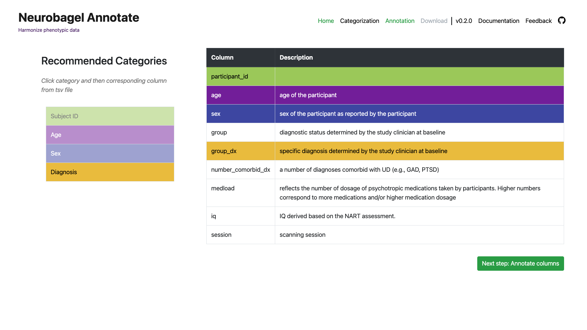
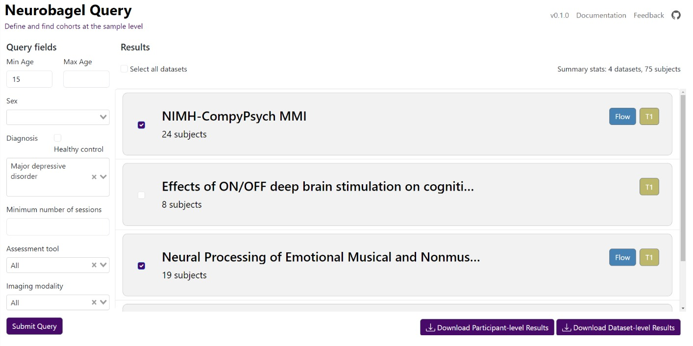
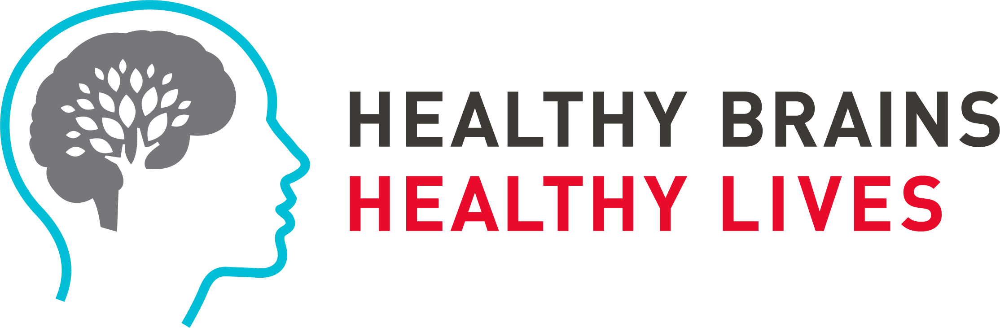
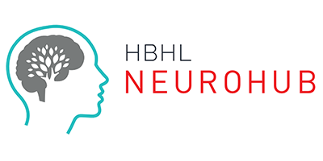

An ecosystem for distributed dataset harmonization and search.
Neurobagel allows you to connect a local neuroimaging dataset with others in a decentralized framework using linked data principles.
An ecosystem for distributed dataset harmonization and search.
Neurobagel allows you to connect a local neuroimaging dataset with others in a decentralized framework using linked data principles.
Federated data integration, local control
Our aim is to allow researchers and data owners to harmonize and integrate their datasets without uploading them to a central database. Neurobagel provides reusable data schemas and intuitive tools for local data annotation, enabling participant-level cohort search across harmonized datasets.

The Annotation Tool
Describe your phenotypic tabular data using a harmonized, semantic data model completely in the browser.
We've built this tool specifically for curators to map column values to our vocabulary without ever needing to look at code.


The Query Tool
Search for subjects with specific clinical-demographic and imaging properties spanning independent datasets.
The Query Tool provides an accessible, point-and-click interface to federate data across multiple nodes instantly, giving you immediate insight into subject data availability.
Deploy a graph node
Ready to join the network? Add your data to the federated graph while maintaining complete control over your data.
Our containerized architecture and comprehensive CLI enable systems administrators to spin up a local graph database with Docker in minutes.
Our team
Neurobagel is a collaborative effort based in the ORIGAMI Lab at the Montreal Neurological Institute in collaboration with the Douglas Research Centre. Visit this page to learn more about the project team.

